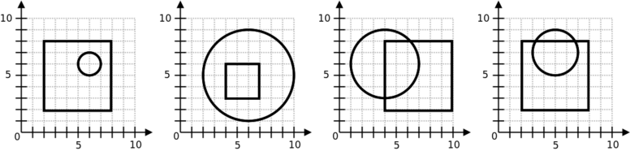

Para efeitos da nota atribuida à resolução de exercícios ao longo do semestre - Submeter até 23:59 de 3 de Abril
(o problema continuará depois disponível para submissão, mas sem contar para a nota)
[para perceber o contexto do problema deve ler o guião da aula #02]
A Sarita adora desenhar figuras geométricas! Depois de desenhar, ela gosta também de colorir os desenhos. No seu último desenho, ela fez uma série de quadrados e círculos e resolveu pintar a área de interseção entre cada um dos pares de figuras.
O problema é que a Sarita gasta imenso os marcadores com as suas pinturas! Como és responsável por lhe comprar o material de desenho, queres perceber exactamente quanto é que ela gasta e para isso pretendes saber qual a área pintada.
Dadas as coordenadas de um quadrado e um círculo a tua tarefa é descobrir qual a área da zona da interseção entre ambas as duas figuras geométricas.
Na primeira linha do input vem um número N, indicando o número de casos a considerar.
Seguem-se N linhas, cada uma com um caso de teste (um quadrado e um círculo). Cada caso é indicado por 6 inteiros: qx, qy, ql, cx, cy, cr. O quadrado tem os lados paralelos aos eixos das coordenadas, canto inferior esquerdo (qx, qy) e lado de tamanho ql. O círculo tem centro (cx, cy) e raio cr.
O output deve ser constituído por N linhas, uma por cada caso, indicando a área da interseção entre o quadrado e o círculo respectivo.
Para ser considerada correcta, a diferença entre a área que escreveu e a área correcta deve ser inferior ou igual a 0.1 (este problema tem um avaliador especial para verificar se isso acontece). Por exemplo, se a resposta correcta for "1.2345" qualquer uma das seguintes respostas seria aceite: "1.2", "1.3, "1.23", "1.22", "1.24" (já "1.1" não seria aceite, pois |1.2345 - 1.1| > 0.1).
São garantidos os seguintes limites em todos os casos de teste que irão ser colocados ao programa:
| 1 ≤ N ≤ 5 | Número de casos a considerar | |
| 1 ≤ qx, qy, ql, cx, cy, cr ≤ 10 | Coordenadas do quadrado e do círculo |
4 2 2 6 6 6 1 4 3 3 6 5 4 4 2 6 4 6 3 2 2 6 5 7 2
3.1416 9.0000 12.5884 10.1096
O exemplo de input corresponde aos quatro casos da seguinte figura:

Desenho e Análise de Algoritmos (CC2001)
DCC/FCUP - Faculdade de Ciências da Universidade do Porto